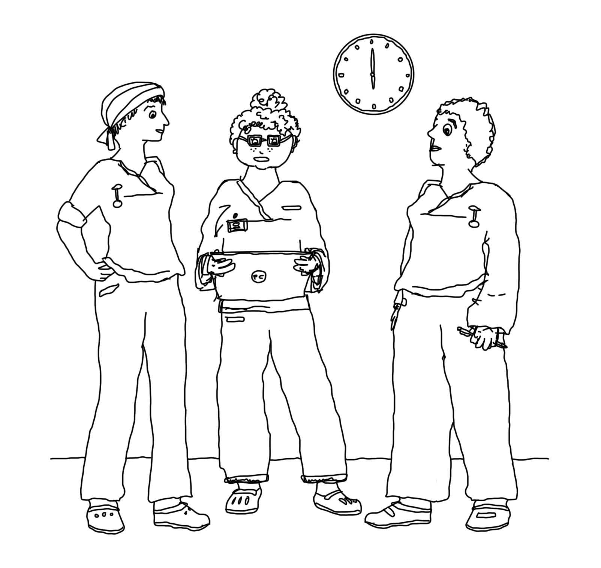
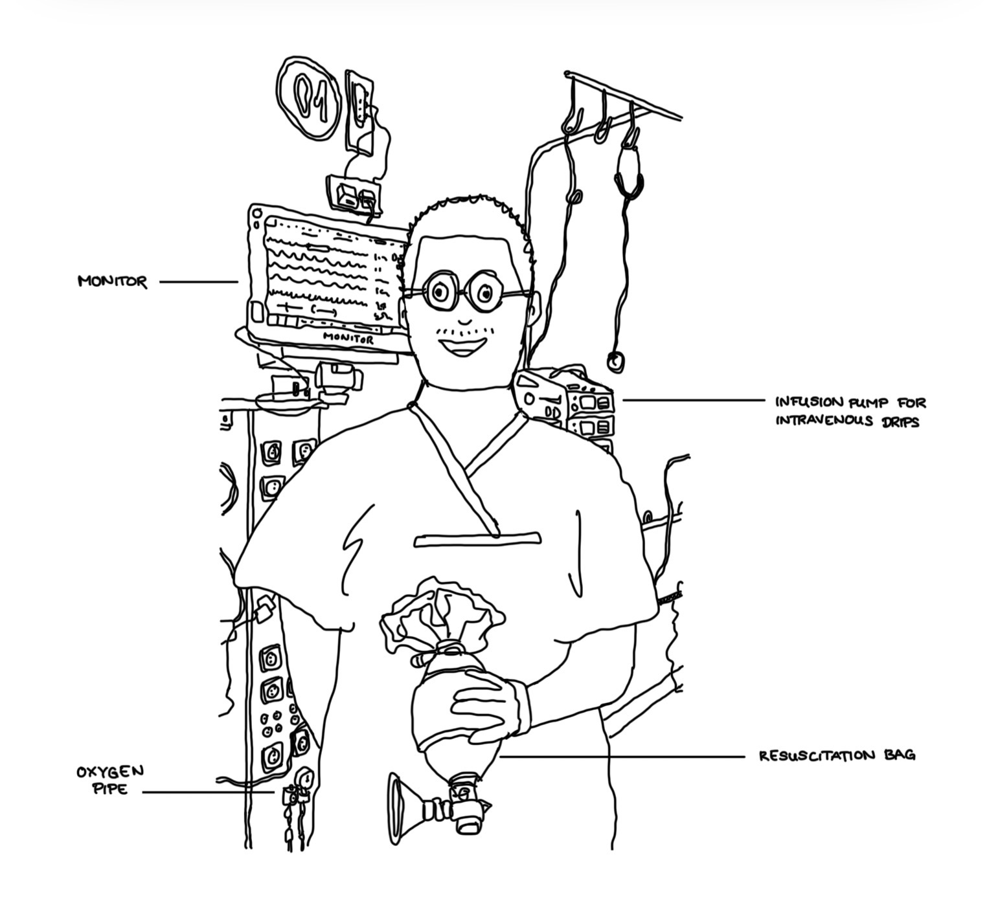
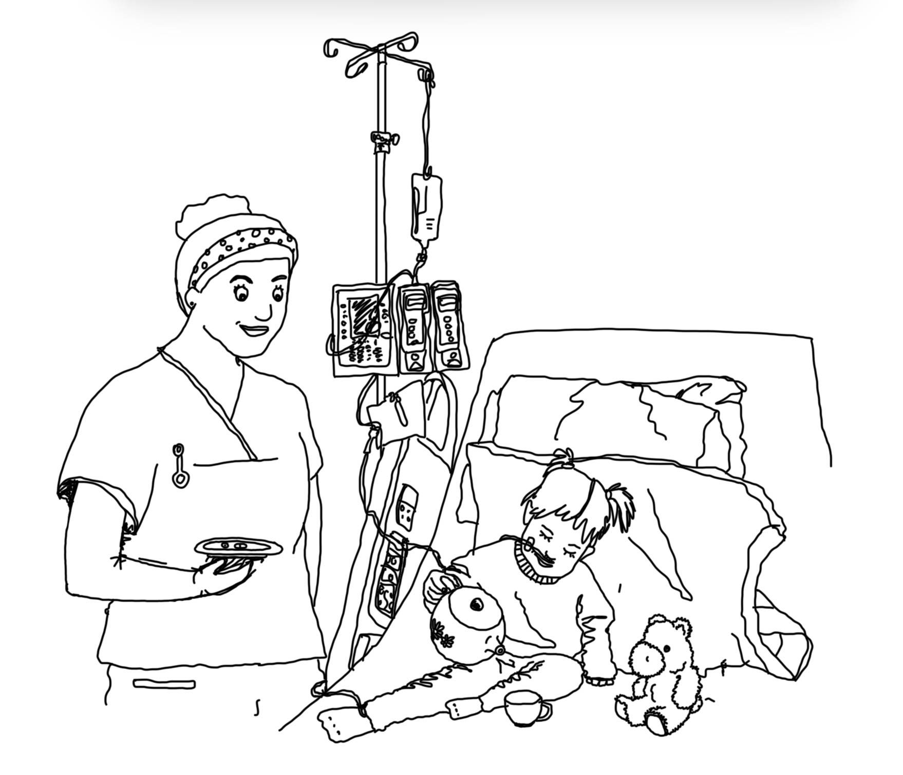
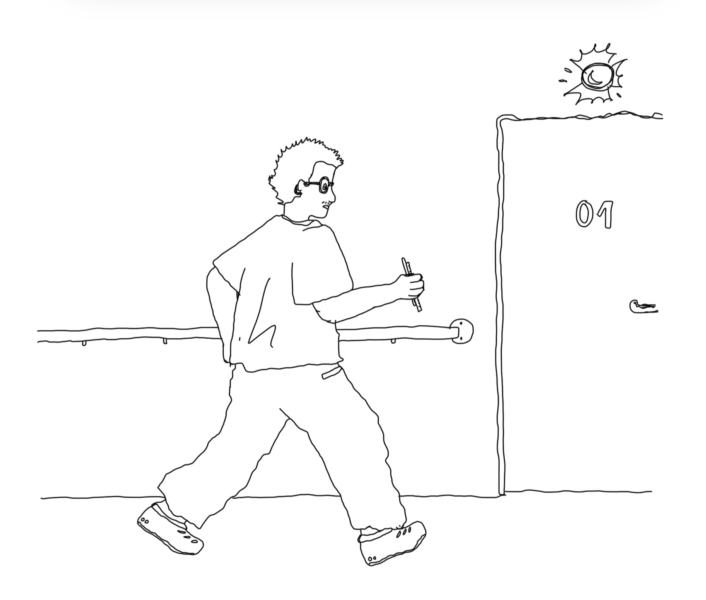
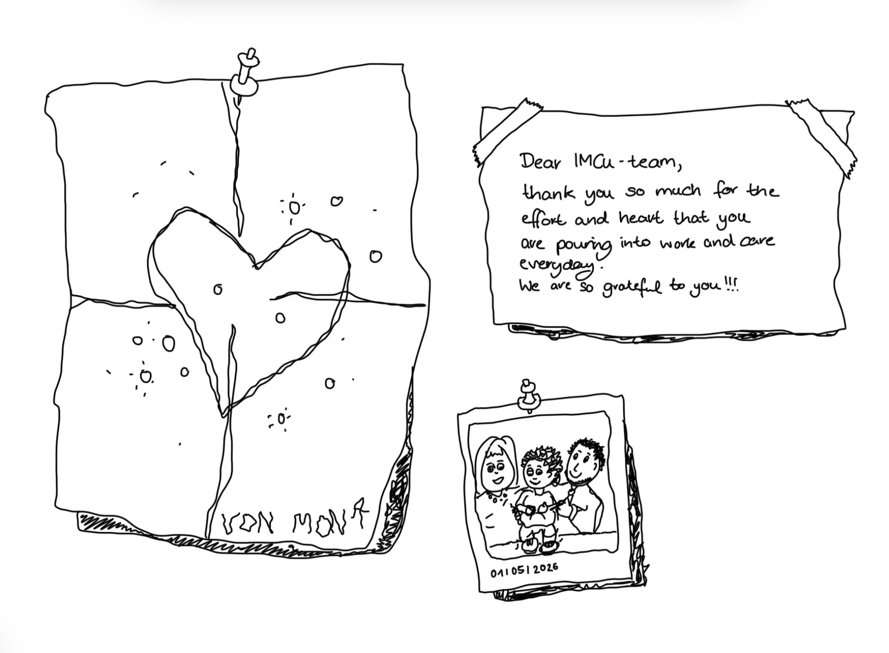

PROFILE · 01
Inga
- AGE
- 45
- COUNTRY
- Germany
“It’s a brilliant job; I would never have wanted to do anything else.”
BEHIND THE CURTAINS VOL. 1 · NO. 1
A Paediatric Nurse in the Intermediate Care Unit (IMCU).
Check out the editors’ notes down below.“It’s a brilliant job; I would never have wanted to do anything else.”
Early shift · 6:00 to 14:12
Late shift · 13:18 to 21:30
Night shift · 21:00 to 6:30
Working with critically ill babies, children and teenager.
Our unit cares for critically ill children who require close monitoring. We look after patients from premature infants to 17-year-olds. When providing care, especially with the youngest ones, I must observe them very closely. For instance, children will almost always tell you they have a stomachache because they aren’t able to pinpoint the exact location of the pain. We work closely with the parents: They know their child best, so we can often gain further insight by asking f. ex. how the child acts at home. Most of those children in our care are at the beginning of a long hospital stay.
– Inga
A key point in paediatrics is that children are not small adults. They are in the midst of their most intensive developmental phase – both anatomically and psychologically. Dosages, the size of materials and the nurse-patient-communication are all adapted to them.
↓Intermediate Care Unit (IMCU).
IMCUs are a relatively new development in paediatrics. They serve as an intermediate level attached to the intensive care unit (ICU) and are designed to help alleviate its workload. In our unit, we care for children who require constant cardiovascular monitoring, but do not need invasive ventilation – that’s only in the ICU. Furthermore, the staffing ratio differs from the standard units: We can have eight children, and I am responsible for up to four patients. By contrast, the ratio on a standard unit during the night shift can sometimes be as high as one for ten.
– Inga
Beginning of the Shift.
There’re two different types of handovers: For the transition to and from the night shift, the entire team receives an update like new children, improvements or worsening of condition and change in therapy. During the day, from early shift to the late shift, you first get a brief overview of all the children and then, you sit down with your colleague to receive a one-on-one handover. Sometimes, it’s also helpful to go into the patient’s room. Especially if there are many specific details so that things can be explained or demonstrated directly.

First practical action.
[Before the obligatory check of material and patient status:] I go to the computer and take a detailed look at the medical instructions. Are there any medicines I need to administer, or any treatment I need to carry out soon? Then I go into the child’s room and introduce myself to them and perhaps their parents. After that, I need to see how everything is looking. Is the monitor set up correctly? Are the intravenous drips running properly? Is there a suction device and a resuscitation bag available in case of emergency? Is the oxygen pipe on the wall in good working order?

Interaction.
[On the one hand], it’s lovely to see that children deal with illness in a completely different way. Children still laugh a lot – at least most of the time. Children give you different feedback to adults, and if you like working with children and try to have fun despite the hospital atmosphere, then children are very receptive to that. Even when they’re ill, they’re still just children.
[On the other hand], a large part of paediatric nursing involves dealing with family members and they aren’t necessarily easy to deal with in stressful situations. Compared to the past, we now try to ensure that parents can be there as much as possible. I find it hard to watch when parents see that differently [and leave their child alone in the hospital]. You very quickly get a sense of the bond they’ve with their child and how they’re function as a parenting team. Even a baby can sense that: When I am on the night shift and I hear a baby crying all the time because neither parent is with them, I’ll sit down and comfort them, if I’ve got the time. Babies might not be able to say it yet, but they miss being cuddled too. We also have some lovely parents who ask because their child is in hospital for a long time and they need a break: Can (f. ex.) Granny stay with our child? There’re no objections to that.

Spontaneity and predictability.
It’s impossible to predict how the day will unfold. Sometimes there’re scheduled appointments like a surgery, for which I make preparations. Some of the children conditions worsen all of the sudden and they turn into an emergency, to which we then have to respond. We have physiotherapists who come in every day to look after children in need of their care. And there’re psychologists for older children or also the parents if needed.

End of the Shift.
Realising that you could actually make a difference. For example, when you get feedback from the parents saying you provided them with good support. We often transfer the children after some time to the general paediatric unit and from there they continue with rehabilitation. Some parents come back later to tell us how things are going now and what impact our interventions have had.

Under the current funding system in the German Health Care sector, paediatric medicine is regarded as unprofitable and even as a “money-losing business”. Only large hospitals can afford paediatric units. It is an additional burden at a time when many hospitals are struggling to avoid insolvency.
They’re always cutting costs. Paediatric Nursing is very much neglected. It upsets me that children don’t seem to be given much priority.
— Inga
Produced by Alina Körber, Marit Duddeck and Tiril Langeland Goodchild.
This article was created as part of the examination requirement for the course “Communication Design” at Østfold University of Applied Sciences in the autumn semester 2026.
Supervised by Elin Strand Larsen, Joakim Karlsen and Tore Marius Akerbæk
A special “Thank you!” goes to Inga for taking time for the interview and sharing her work story with us.